Load Packages
# numerical calculation & data frames
import numpy as np
import pandas as pd
# visualization
import matplotlib.pyplot as plt
import seaborn as sns
import seaborn.objects as so
# statistics
import statsmodels.api as smR for Data Science by Wickham & Grolemund
# numerical calculation & data frames
import numpy as np
import pandas as pd
# visualization
import matplotlib.pyplot as plt
import seaborn as sns
import seaborn.objects as so
# statistics
import statsmodels.api as sm# pandas options
pd.set_option("mode.copy_on_write", True)
pd.options.display.float_format = '{:.2f}'.format # pd.reset_option('display.float_format')
pd.options.display.max_rows = 7
# Numpy options
np.set_printoptions(precision = 2, suppress=True)flights = pd.read_csv('data/flights.csv')
airlines = pd.read_csv('data/airlines.csv')
airports = pd.read_csv('data/airports.csv')
planes = pd.read_csv('data/planes.csv')
weather = pd.read_csv('data/weather.csv')# 1. Add the location of the origin and destination (i.e. the lat and lon in airports) to flights.airport_location = airports[['faa', 'lat', 'lon']]
airport_location faa lat lon
0 04G 41.13 -80.62
1 06A 32.46 -85.68
2 06C 41.99 -88.10
... ... ... ...
1455 ZWI 39.74 -75.55
1456 ZWU 38.90 -77.01
1457 ZYP 40.75 -73.99
[1458 rows x 3 columns]# Origin의 위치 정보 추가
flights = flights.merge(airport_location, left_on='origin', right_on='faa').drop(columns="faa") # faa 컬럼은 중복되어 불필요하므로 삭제
flights.head(3) year month day dep_time sched_dep_time dep_delay arr_time \
0 2013 1 1 517.00 515 2.00 830.00
1 2013 1 1 554.00 558 -4.00 740.00
2 2013 1 1 555.00 600 -5.00 913.00
sched_arr_time arr_delay carrier flight tailnum origin dest air_time \
0 819 11.00 UA 1545 N14228 EWR IAH 227.00
1 728 12.00 UA 1696 N39463 EWR ORD 150.00
2 854 19.00 B6 507 N516JB EWR FLL 158.00
distance hour minute lat lon
0 1400 5 15 40.69 -74.17
1 719 5 58 40.69 -74.17
2 1065 6 0 40.69 -74.17 # dest의 경우 airports 테이블에 없는 값이 존재
flights[~flights.dest.isin(airport_location.faa)].head(3) year month day dep_time sched_dep_time dep_delay arr_time \
21 2013 1 1 701.00 700 1.00 1123.00
57 2013 1 1 913.00 918 -5.00 1346.00
60 2013 1 1 926.00 929 -3.00 1404.00
sched_arr_time arr_delay carrier flight tailnum origin dest air_time \
21 1154 -31.00 UA 1203 N77296 EWR SJU 188.00
57 1416 -30.00 UA 1519 N24715 EWR STT 189.00
60 1421 -17.00 B6 215 N775JB EWR SJU 191.00
distance hour minute lat lon
21 1608 7 0 40.69 -74.17
57 1634 9 18 40.69 -74.17
60 1608 9 29 40.69 -74.17 # flights 테이블을 유지하기 위해, how="left" 필요
# suffixes 옵션 사용하면 편리
flights = flights.merge(
airport_location,
left_on="dest",
right_on="faa",
how="left",
suffixes=("_origin", "_dest"), # lat, lon이 다시 추가되어 중복되므로 suffixes 옵션 사용
).drop("faa", axis=1)flights.head(3) year month day dep_time sched_dep_time dep_delay arr_time \
0 2013 1 1 517.00 515 2.00 830.00
1 2013 1 1 554.00 558 -4.00 740.00
2 2013 1 1 555.00 600 -5.00 913.00
sched_arr_time arr_delay carrier ... origin dest air_time distance \
0 819 11.00 UA ... EWR IAH 227.00 1400
1 728 12.00 UA ... EWR ORD 150.00 719
2 854 19.00 B6 ... EWR FLL 158.00 1065
hour minute lat_origin lon_origin lat_dest lon_dest
0 5 15 40.69 -74.17 29.98 -95.34
1 5 58 40.69 -74.17 41.98 -87.90
2 6 0 40.69 -74.17 26.07 -80.15
[3 rows x 22 columns]# 2. Is there a relationship between the age of a plane and its delays?
plane_age = (
planes[["tailnum", "year"]]
.merge(flights, on="tailnum", how="right", suffixes=("_plane", "")) # 두 테이블의 year의 의미가 다름
.assign(age=lambda x: x.year - x.year_plane)
)plane_age.head(3) tailnum year_plane year month day dep_time sched_dep_time dep_delay \
0 N14228 1999.00 2013 1 1 517.00 515 2.00
1 N39463 2012.00 2013 1 1 554.00 558 -4.00
2 N516JB 2000.00 2013 1 1 555.00 600 -5.00
arr_time sched_arr_time ... dest air_time distance hour minute \
0 830.00 819 ... IAH 227.00 1400 5 15
1 740.00 728 ... ORD 150.00 719 5 58
2 913.00 854 ... FLL 158.00 1065 6 0
lat_origin lon_origin lat_dest lon_dest age
0 40.69 -74.17 29.98 -95.34 14.00
1 40.69 -74.17 41.98 -87.90 1.00
2 40.69 -74.17 26.07 -80.15 13.00
[3 rows x 24 columns]# 항공기의 연식(age)와 출발 지연과의 관계
(
so.Plot(plane_age, x='age', y='dep_delay')
.add(so.Dots())
.add(so.Line(), so.PolyFit(5))
)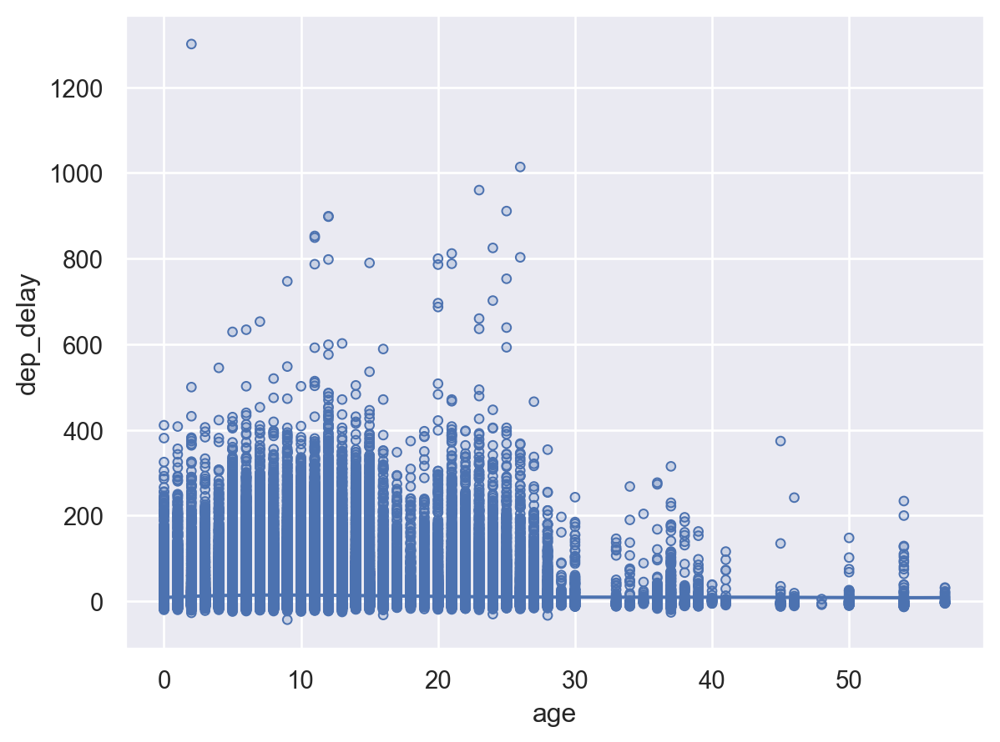
# 출발 지연의 값이 매우 밀집해 있음: 히스토그램으로 확인
(
so.Plot(plane_age.query('age < 10'), x='dep_delay', color="age")
.add(so.Line(), so.Hist(binwidth=3))
.facet("age", wrap=5)
.layout(size=(10, 6))
)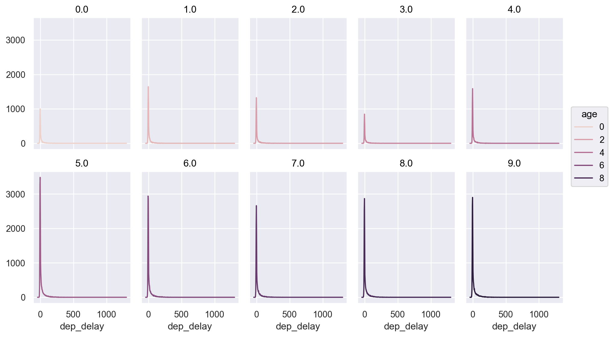
# 출발 지연의 값이 매우 밀집해 있음: 히스토그램으로 확인
(
so.Plot(plane_age.query('age < 10'), x='dep_delay', color="age")
.add(so.Line(), so.Hist(binwidth=1))
.facet("age", wrap=5)
.layout(size=(10, 6))
.limit(x=(-20, 20))
)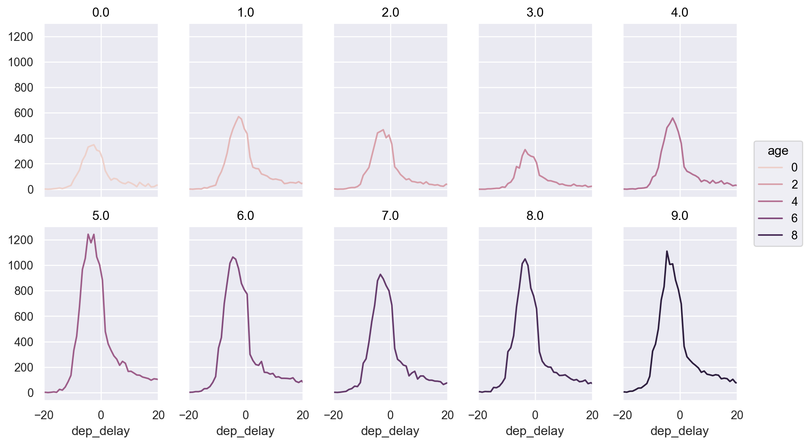
(
so.Plot(plane_age, x='dep_delay', color="age")
.add(so.Line(), so.Hist(stat="proportion", binwidth=1))
.limit(x=(-20, 60))
)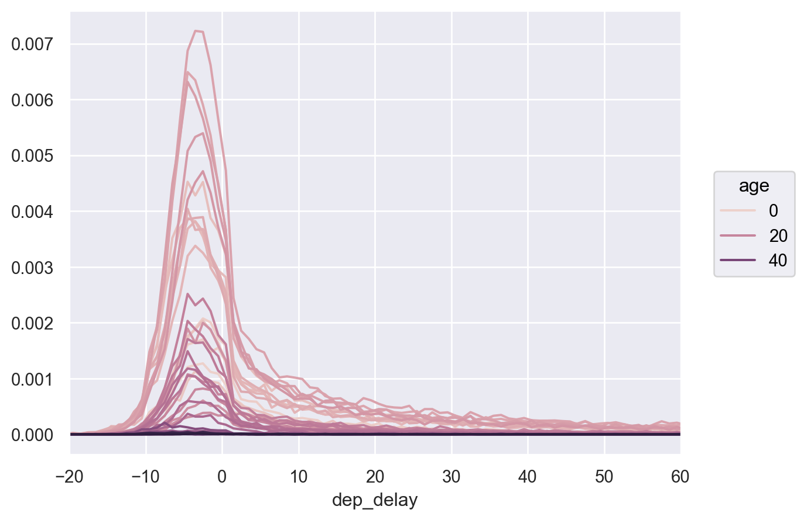
(
so.Plot(plane_age, x='age', y='dep_delay')
.add(so.Dots(), so.Agg("mean"))
.add(so.Dots(color="red"), so.Agg("median"))
)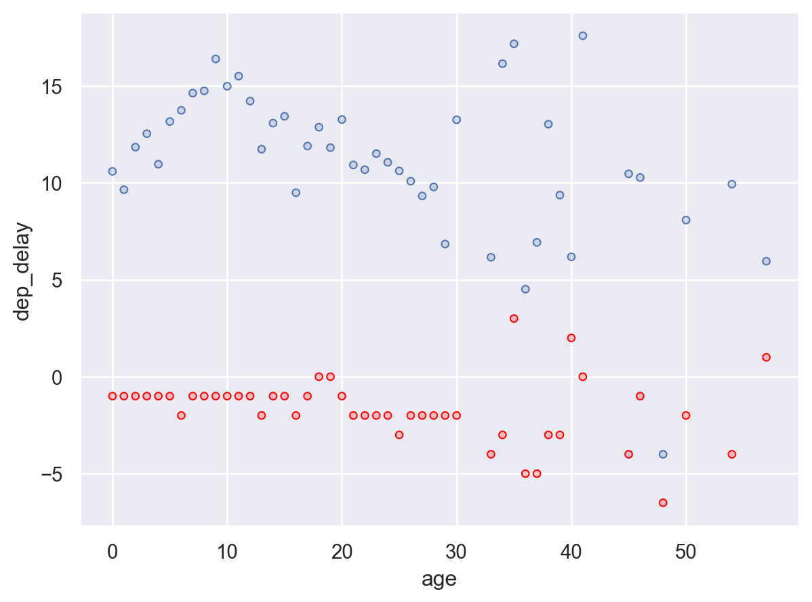
(
so.Plot(plane_age.query('dep_delay > 0'), x='age', y='dep_delay')
.add(so.Dots(), so.Agg("mean"))
.add(so.Dots(color="red"), so.Agg("median"))
)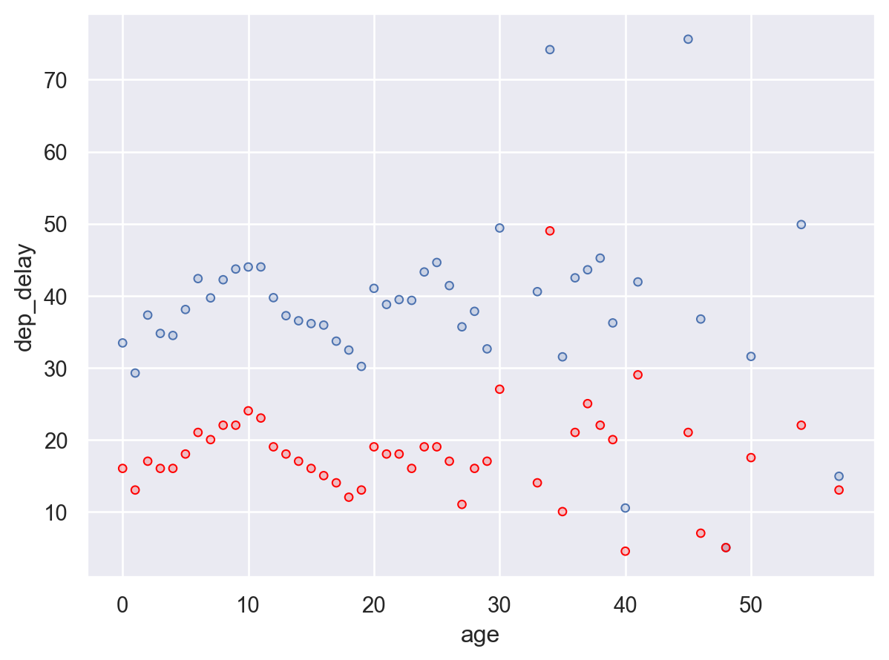
age_delay = (
plane_age.query('dep_delay > 0 & dep_delay < 100')
.groupby("age")["dep_delay"]
.agg(["mean", "median", "count"])
.reset_index()
)
age_delay age mean median count
0 0.00 22.73 13.00 1686
1 1.00 19.97 11.00 2761
2 2.00 22.54 13.00 2092
.. ... ... ... ...
43 50.00 19.88 14.50 16
44 54.00 26.62 15.00 26
45 57.00 14.91 13.00 11
[46 rows x 4 columns](
so.Plot(age_delay.query('count > 30'), x='age')
.add(so.Dots(color="red"), y="mean")
.add(so.Dots(), y="median")
.add(so.Line(color="deepskyblue"), y=age_delay["count"]/1000*3)
)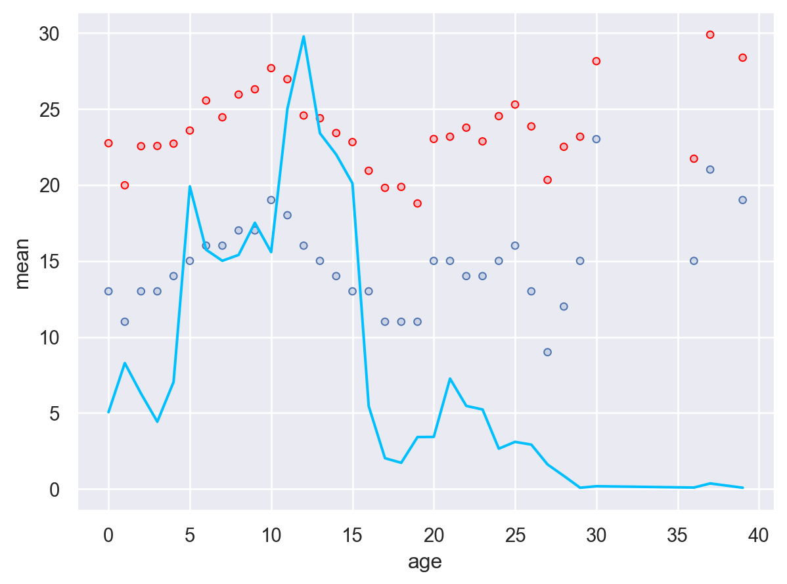
# 3. What weather conditions make it more likely to see a delay?flights_weather = flights.merge(weather)# 강수량 precipitation
(
so.Plot(flights_weather, x='precip')
.add(so.Bar(), so.Hist())
.limit(y=(0, 5000))
)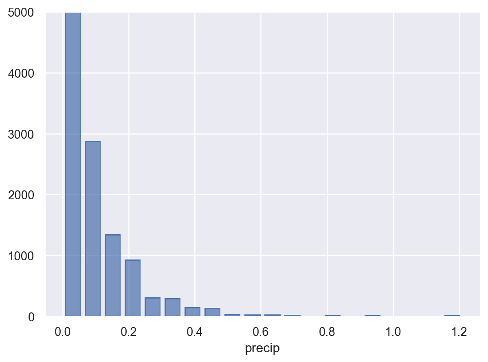
from sbcustom import rangeplot
(
rangeplot(flights_weather, "precip", "dep_delay")
.limit(y=(-20, 100), x=(0, 0.6))
.layout(size=(8, 5))
)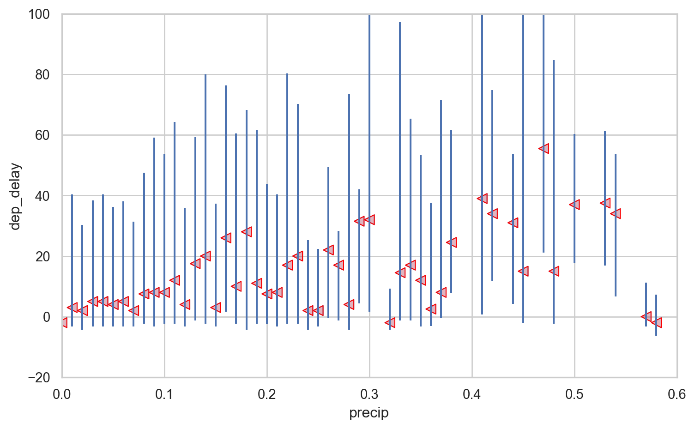
# 강수량 precipitation
precip = flights_weather.groupby("precip")["dep_delay"].agg(["mean", "median"]).reset_index()
precip precip mean median
0 0.00 11.37 -2.00
1 0.01 29.80 3.00
2 0.02 24.08 2.00
.. ... ... ...
52 0.82 94.67 36.00
53 0.94 27.85 19.00
54 1.21 113.11 65.50
[55 rows x 3 columns](
so.Plot(precip, x='precip', y="mean")
.add(so.Line())
.add(so.Line(), so.PolyFit(5))
.add(so.Line(color="red"), y="median")
)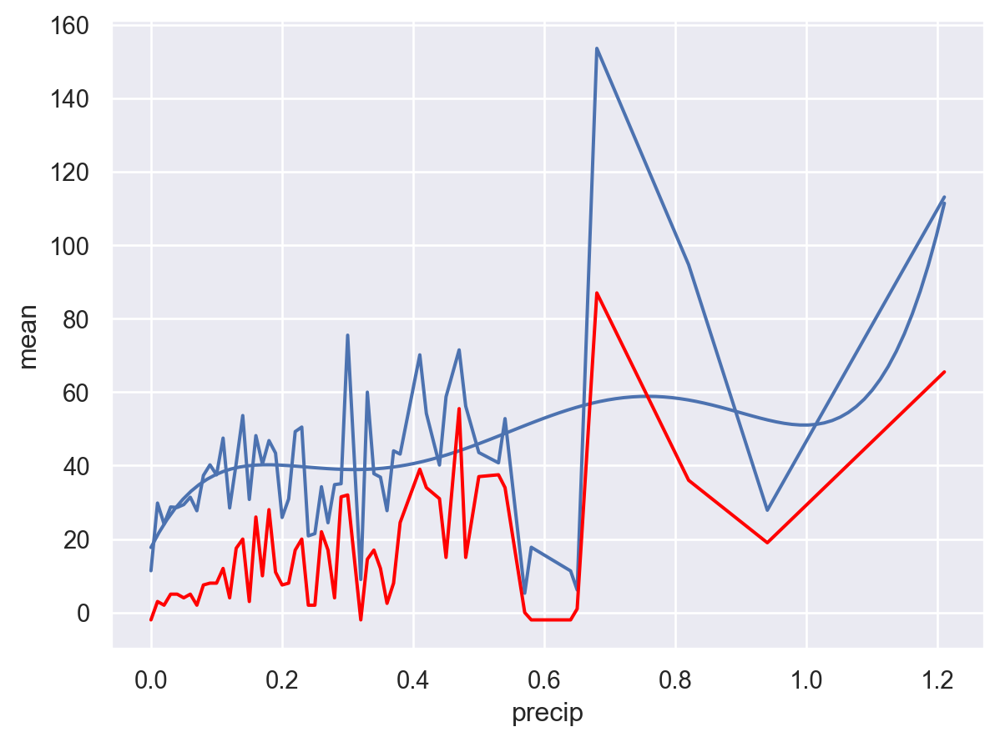
# 시야 visibility
(
so.Plot(flights_weather, x='visib')
.add(so.Bar(), so.Hist())
)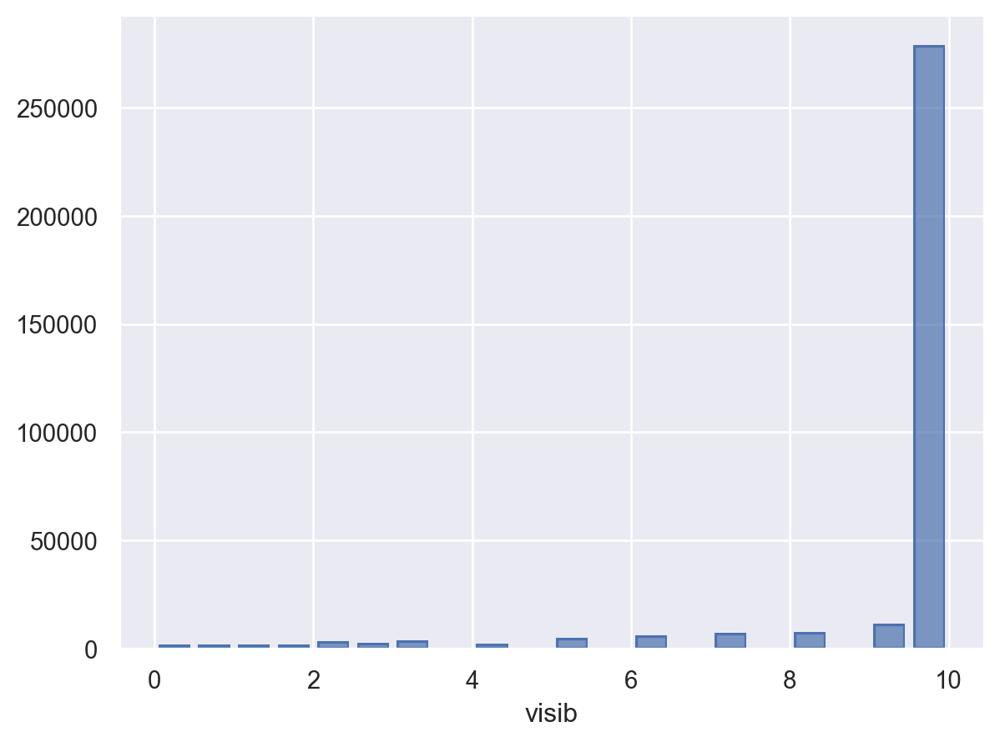
rangeplot(flights_weather, "visib", "dep_delay")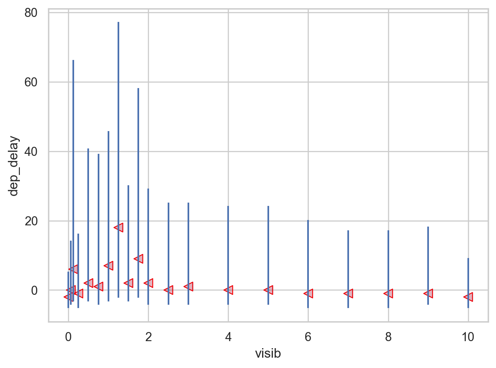
(
so.Plot(flights_weather.query('visib < 4'), x='visib', y='dep_delay')
.add(so.Dot(), so.Agg())
.add(so.Dot(color="red"), so.Agg("median"))
)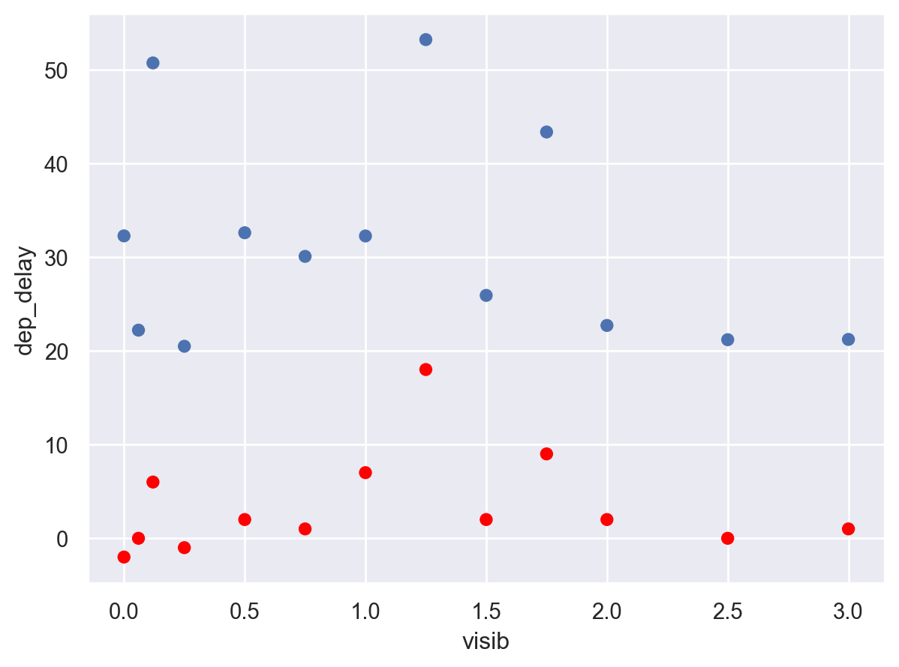
# 4. flights 테이블에서 하루 평균 도착지연(arr_delay)가 가장 큰 10일에 해당하는 항공편을 선택delay_top = flights.groupby(["year", "month", "day"])["arr_delay"].mean().sort_values(ascending=False).head(10)
delay_topyear month day
2013 3 8 85.86
6 13 63.75
7 22 62.76
...
12 17 55.87
8 8 55.48
12 5 51.67
Name: arr_delay, Length: 10, dtype: float64flights.merge(delay_top.reset_index(name="daily_delay"), on=["year", "month", "day"]).head(3) # inner join! year month day dep_time sched_dep_time dep_delay arr_time \
0 2013 12 5 32.00 1930 302.00 228.00
1 2013 12 5 50.00 2046 244.00 233.00
2 2013 12 5 457.00 500 -3.00 637.00
sched_arr_time arr_delay carrier ... dest air_time distance hour \
0 2136 292.00 EV ... CHS 94.00 628 19
1 2224 249.00 EV ... GSO 80.00 445 20
2 651 -14.00 US ... CLT 81.00 529 5
minute lat_x lon_x lat_y lon_y daily_delay
0 30 40.69 -74.17 40.69 -74.17 51.67
1 46 40.69 -74.17 40.69 -74.17 51.67
2 0 40.69 -74.17 40.69 -74.17 51.67
[3 rows x 23 columns]# 5. flights 테이블의 도착지(dest)에 대한 공항정보가 airports 테이블에 없는 그러한 도착지(dest)를 구하면?
idx = ~flights["dest"].isin(airports["faa"]) # boolian index
flights[idx]["dest"].unique()array(['SJU', 'STT', 'BQN', 'PSE'], dtype=object)# 6. Filter flights (항공편) in flights to only show flights with planes that have flown at least 100 flights.
n_planes = (
flights.groupby("tailnum")["dep_delay"].count() # 취소된 항공편을 제외하기 위함. size()는 취소된 항공편도 포함
.reset_index(name="n")
.query('n >= 100')
)
n_planes tailnum n
1 N0EGMQ 354
2 N10156 146
6 N10575 272
... ... ...
4003 N979DL 125
4036 N996DL 101
4042 N9EAMQ 238
[1210 rows x 2 columns]flights.merge(n_planes).head(3) # inner join! year month day dep_time sched_dep_time dep_delay arr_time \
0 2013 1 1 517.00 515 2.00 830.00
1 2013 1 8 1435.00 1440 -5.00 1717.00
2 2013 1 9 717.00 700 17.00 812.00
sched_arr_time arr_delay carrier ... dest air_time distance hour \
0 819 11.00 UA ... IAH 227.00 1400 5
1 1746 -29.00 UA ... MIA 150.00 1085 14
2 815 -3.00 UA ... BOS 39.00 200 7
minute lat_x lon_x lat_y lon_y n
0 15 40.69 -74.17 40.69 -74.17 111
1 40 40.69 -74.17 40.69 -74.17 111
2 0 40.69 -74.17 40.69 -74.17 111
[3 rows x 23 columns]# 7. Find the 48 hours (over the course of the whole year) that have the worst (departure) delays. Cross-reference it with the weather data. Can you see any patterns?worst_hours = (
flights.groupby(["origin", "year", "month", "day", "hour"])["dep_delay"]
.mean()
.nlargest(48)
.reset_index(name="ave_delay")
)
worst_hours origin year month day hour ave_delay
0 LGA 2013 7 28 21 279.67
1 EWR 2013 2 9 10 269.00
2 EWR 2013 2 9 9 266.00
.. ... ... ... ... ... ...
45 LGA 2013 3 8 15 155.81
46 EWR 2013 7 10 19 155.31
47 LGA 2013 3 8 11 155.20
[48 rows x 6 columns]# Merge with weather
weather_most_delayed = weather.merge(worst_hours, how="left") # on=["origin", "year", "month", "day", "hour"]
weather_most_delayed.head(3) origin year month day hour temp dewp humid wind_dir wind_speed \
0 EWR 2013 1 1 1 39.02 26.06 59.37 270.00 10.36
1 EWR 2013 1 1 2 39.02 26.96 61.63 250.00 8.06
2 EWR 2013 1 1 3 39.02 28.04 64.43 240.00 11.51
wind_gust precip pressure visib time_hour ave_delay
0 NaN 0.00 1012.00 10.00 2013-01-01 01:00:00 NaN
1 NaN 0.00 1012.30 10.00 2013-01-01 02:00:00 NaN
2 NaN 0.00 1012.50 10.00 2013-01-01 03:00:00 NaN # Worst에 포함되는지를 표시하는 컬럼 추가 (tag)
weather_most_delayed["tag"] = np.where(weather_most_delayed["ave_delay"].isna(), "others", "worst")
weather_most_delayed.head(3) origin year month day hour temp dewp humid wind_dir wind_speed \
0 EWR 2013 1 1 1 39.02 26.06 59.37 270.00 10.36
1 EWR 2013 1 1 2 39.02 26.96 61.63 250.00 8.06
2 EWR 2013 1 1 3 39.02 28.04 64.43 240.00 11.51
wind_gust precip pressure visib time_hour ave_delay tag
0 NaN 0.00 1012.00 10.00 2013-01-01 01:00:00 NaN others
1 NaN 0.00 1012.30 10.00 2013-01-01 02:00:00 NaN others
2 NaN 0.00 1012.50 10.00 2013-01-01 03:00:00 NaN others # Normalize the weather conditions
weather_most_delayed_z = weather_most_delayed.copy()
weather_most_delayed_z.loc[:, "temp":"visib"] = weather_most_delayed_z.loc[
:, "temp":"visib"
].apply(lambda x: (x - x.mean()) / x.std()) # 컬럼별로 정규화
weather_most_delayed_z.head(3) origin year month day hour temp dewp humid wind_dir wind_speed \
0 EWR 2013 1 1 1 -0.91 -0.79 -0.16 0.65 -0.02
1 EWR 2013 1 1 2 -0.91 -0.75 -0.05 0.47 -0.29
2 EWR 2013 1 1 3 -0.91 -0.69 0.10 0.37 0.12
wind_gust precip pressure visib time_hour ave_delay tag
0 NaN -0.15 -0.79 0.36 2013-01-01 01:00:00 NaN others
1 NaN -0.15 -0.75 0.36 2013-01-01 02:00:00 NaN others
2 NaN -0.15 -0.73 0.36 2013-01-01 03:00:00 NaN others # 여러 기상 정보에 대해 long form으로 변환
weather_most_delayed_long = weather_most_delayed_z.melt(
id_vars=["origin", "year", "month", "day", "hour", "tag"],
value_vars=[
"temp",
"dewp",
"humid",
"wind_speed",
"wind_gust",
"precip",
"visib",
"pressure",
],
var_name="weather",
)
from sbcustom import boxplot, rangeplot
(
rangeplot(weather_most_delayed_long, x='tag', y='value')
.facet("weather", wrap=4)
.layout(size=(8, 5))
)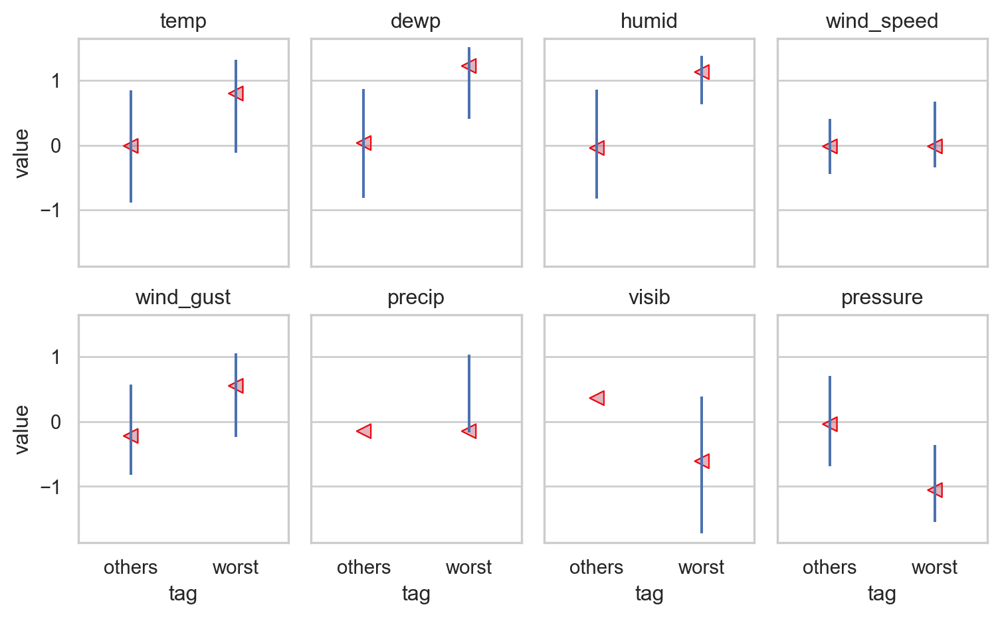
# 참고 anti-join: worst_hours와 키가 매치되지 않는 행만 선택
(
weather
.merge(worst_hours, indicator=True, how="left")
.query('_merge == "left_only"')
).head(3) origin year month day hour temp dewp humid wind_dir wind_speed \
0 EWR 2013 1 1 1 39.02 26.06 59.37 270.00 10.36
1 EWR 2013 1 1 2 39.02 26.96 61.63 250.00 8.06
2 EWR 2013 1 1 3 39.02 28.04 64.43 240.00 11.51
wind_gust precip pressure visib time_hour ave_delay \
0 NaN 0.00 1012.00 10.00 2013-01-01 01:00:00 NaN
1 NaN 0.00 1012.30 10.00 2013-01-01 02:00:00 NaN
2 NaN 0.00 1012.50 10.00 2013-01-01 03:00:00 NaN
_merge
0 left_only
1 left_only
2 left_only # 8. You might expect that there’s an implicit relationship between plane and airline, because each plane is flown by a single airline. Confirm or reject this hypothesis using the tools you’ve learned above.# 즉, 각 항공기는 특정 항공사에서만 운행되는가의 질문임. 2개 이상의 항공사에서 운항되는 항공기가 있는지 확인해 볼 것
planes_share = (
flights.groupby("tailnum")["carrier"].nunique()
.reset_index(name="n")
.query("n > 1")
)
planes_share tailnum n
195 N146PQ 2
224 N153PQ 2
342 N176PQ 2
... ... ..
4021 N989AT 2
4023 N990AT 2
4031 N994AT 2
[17 rows x 2 columns]# 그리고, 2개 이상의 항공사에서 운항되는 항공기들만 포함하고, 그 항공사들의 full name을 함께 포함하는 테이블을 만들어 볼 것
flights.merge(planes_share).merge(airlines).head(3) year month day dep_time sched_dep_time dep_delay arr_time \
0 2013 1 11 1244.00 1250 -6.00 1459.00
1 2013 1 11 1821.00 1830 -9.00 2014.00
2 2013 1 15 612.00 615 -3.00 927.00
sched_arr_time arr_delay carrier ... air_time distance hour minute \
0 1449 10.00 9E ... 92.00 488 12 50
1 2044 -30.00 9E ... 79.00 488 18 30
2 855 32.00 9E ... 134.00 760 6 15
lat_x lon_x lat_y lon_y n name
0 40.69 -74.17 40.69 -74.17 2 Endeavor Air Inc.
1 40.69 -74.17 40.69 -74.17 2 Endeavor Air Inc.
2 40.64 -73.78 40.64 -73.78 2 Endeavor Air Inc.
[3 rows x 24 columns]